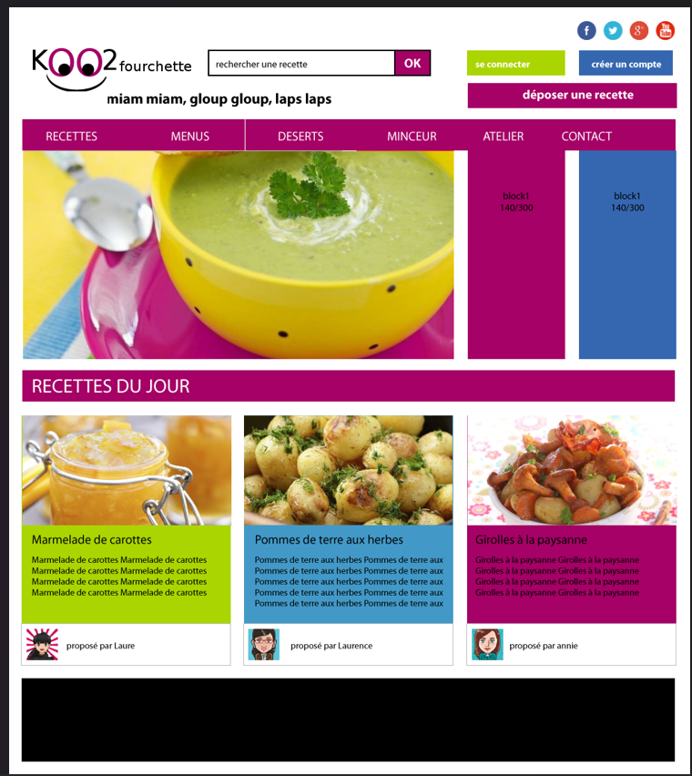

AYMAN MOUMOUH
ADMINISTRATION & CYBERSÉCURITÉ
Étudiant BTS SIO Option SISR.
Objectif : Protection des Réseaux et des Données.
>> PROFIL
Étudiant en deuxième année de BTS SIO à l’Institution Saint-Aspais à Melun, je suis passionné par le réseau et la cybersécurité. Je développe mes compétences en administration système, gestion d’infrastructures et sécurisation des systèmes d’information, avec pour objectif de me spécialiser dans la protection des réseaux et des données.
FORMATION
BTS SIO - 2ème Année
Campus Saint-Aspais
SPÉCIALITÉ
SISR (Réseaux & Systèmes)
OBJECTIF
Expert Cybersécurité
>> BTS SIO
Le Brevet de Technicien Supérieur aux Services Informatiques aux Organisations (BTS SIO), s'adresse à ceux qui souhaitent se former en deux ans aux métiers d'administrateur réseau ou de développeur. Pour par la suite intégrer directement le marché du travail ou continuer des études, dans le domaine de l'informatique.
LE BTS SIO PROPOSE DEUX SPÉCIALITÉS :
L'option Solutions d'infrastructure, systèmes et réseaux forme des professionnels des réseaux et équipements informatiques (installation, maintenance, sécurité). En sortant d'un BTS SIO SISR, vous serez capables de gérer et d'administrer le réseau d'une société et d'assurer sa sécurité et sa maintenance.
Métiers visés :
- Administrateur systèmes et réseaux
- Informaticien support et déploiement
- Pilote d'exploitation
- Technicien d'infrastructure
L'option Solutions logicielles et applications métiers forme des spécialistes des logiciels (rédaction d'un cahier des charges, formulation des besoins et spécifications, développement, intégration au sein de la société).
Métiers visés :
- Développeur d'applications informatiques
- Développeur informatique
- Analyste d'applications
>> ACCRÉDITATIONS
ANSSI
SecNumAcadémie
Sensibilisation à la sécurité des systèmes d'information (SSI).
[VOIR PDF]CISCO
Cybersecurity Intro
Compréhension des cyber-menaces et vulnérabilités.
[VOIR PDF]LINUX
Unhatched
Bases de l'administration système Linux.
[VOIR PDF]PIX
Compétences Numériques
Certification officielle des compétences numériques transversales.
[VOIR PDF]>> COMPÉTENCES SISR
RÉSEAU
SYSTÈME
CYBERSÉCURITÉ
>> OUTILS RÉSEAU & CYBERSÉCURITÉ
>> PARCOURS
CLINIQUE LES TROIS SOLEILS
Technicien N2
Configuration Pare-feu, Serveurs, Gestion de crise.
[VOIR RAPPORT 2]CLINIQUE LES TROIS SOLEILS
Technicien N1
Active Directory, Support Utilisateur, Déploiement.
[VOIR RAPPORT 1]LYCÉE GEORGE SAND
Baccalauréat Général
Spécialités : SES, Histoire-Géo, Sciences Po.
>> PROJETS

INFRA M2L
Architecture Réseau Sécurisée avec DMZ

SEGMENTATION VLAN
Optimisation des flux et sécurité

KOO-2-FOURCHETTE
Site Web Recettes (HTML/CSS)
>> VEILLE TECH : THREAT INTELLIGENCE
ALERTE CRITIQUE : LE "Q-DAY" & H.N.D.L
L'évolution foudroyante des ordinateurs quantiques menace les fondations de la cybersécurité mondiale. L'algorithme de Shor démontre qu'un ordinateur quantique doté de suffisamment de qubits logiques pourra casser instantanément les chiffrements asymétriques actuels (RSA, ECC) qui sécurisent tout Internet (HTTPS, VPN, certificats).
La menace n'est pas futuriste, elle est immédiate : c'est l'attaque Harvest Now, Decrypt Later (HNDL). Des acteurs malveillants aspirent massivement les flux chiffrés d'aujourd'hui pour les décrypter demain. La parade absolue de l'industrie IT ? La transition vers la Cryptographie Post-Quantique (PQC).
ÉVOLUTION DE LA MENACE & RIPOSTE DE L'INDUSTRIE (2015-2026)
La NSA sonne l'alarme quantique
Le véritable point de départ de l'urgence. La NSA annonce publiquement qu'elle va changer sa cryptographie (Suite B) pour anticiper la menace des ordinateurs quantiques, provoquant une onde de choc dans le monde de la cybersécurité.
SOURCE HISTORIQUE >Lancement de la compétition PQC
Le NIST américain lance un appel mondial aux cryptographes pour créer de nouveaux algorithmes capables de résister aux attaques quantiques.
LIRE L'APPEL OFFICIEL >Sélection des algorithmes Post-Quantiques
Après 6 ans d'études, le NIST annonce les premiers algorithmes vainqueurs (comme CRYSTALS-Kyber pour l'échange de clés et Dilithium pour la signature) destinés à remplacer le RSA.
LIRE LE RAPPORT >Le Prix Turing 2025 consacre le quantique
La preuve de la maturité du secteur. Le "Nobel de l'informatique" est attribué aux pionniers de l'information quantique, soulignant que cette technologie n'est plus théorique mais prête à redéfinir l'informatique moderne.
LIRE L'ARTICLE >L'infrastructure s'adapte aux risques émergents
Du point de vue matériel (SISR), des géants comme Dell Technologies étendent leur cadre de cybersécurité et de résilience pour inclure nativement la protection contre les risques quantiques sur les serveurs et le stockage.
LIRE L'ARTICLE >NVIDIA booste les simulations quantiques hybrides
Le développement matériel s'accélère dramatiquement. NVIDIA s'associe à Classiq pour réduire drastiquement les temps de simulation quantique, prouvant que la puissance brute nécessaire arrive plus vite que prévu.
LIRE L'ARTICLE >L'Ultimatum : Danger significatif pour 2029
L'alerte maximale est déclenchée. Google lance un avertissement majeur au secteur technologique : la menace est sous-estimée. L'entreprise accélère sa transition et fixe à 2029 la ligne rouge de la résistance cryptographique.
IMPACT MÉTIER : PLAN D'ACTION S.I.S.R
En tant que futur administrateur systèmes et réseaux, la veille technologique sert à anticiper les interventions sur l'infrastructure. Voici les 3 phases de déploiement post-quantique en entreprise.
AUDIT & CARTOGRAPHIE
Avant de modifier quoi que ce soit, il faut inventorier la "dette cryptographique". L'objectif est de scanner le réseau pour identifier tous les algorithmes vulnérables (RSA, ECC) utilisés dans les certificats SSL/TLS, les tunnels IPsec (VPN), et les bases de données.
STATUT : RECOMMANDATION ACTUELLE ANSSILA CRYPTO-AGILITÉ
Mettre à jour le matériel et l'architecture logicielle pour s'assurer que les pare-feux (ex: PfSense, Fortinet) et les routeurs (Cisco) supportent le changement rapide d'algorithmes de chiffrement sans nécessiter de redémarrage critique ou de refonte du code.
STATUT : PRÉREQUIS INFRASTRUCTUREDÉPLOIEMENT & HYBRIDATION
L'application concrète des standards NIST (ML-KEM / Kyber). Déploiement d'une architecture hybride : combiner un algorithme classique éprouvé avec un nouvel algorithme post-quantique pour sécuriser les flux critiques et contrer immédiatement la menace HNDL.
STATUT : DÉPLOIEMENT HORIZON 2027-2029>> CONTACT
COORDONNÉES
Disponible pour toute opportunité.